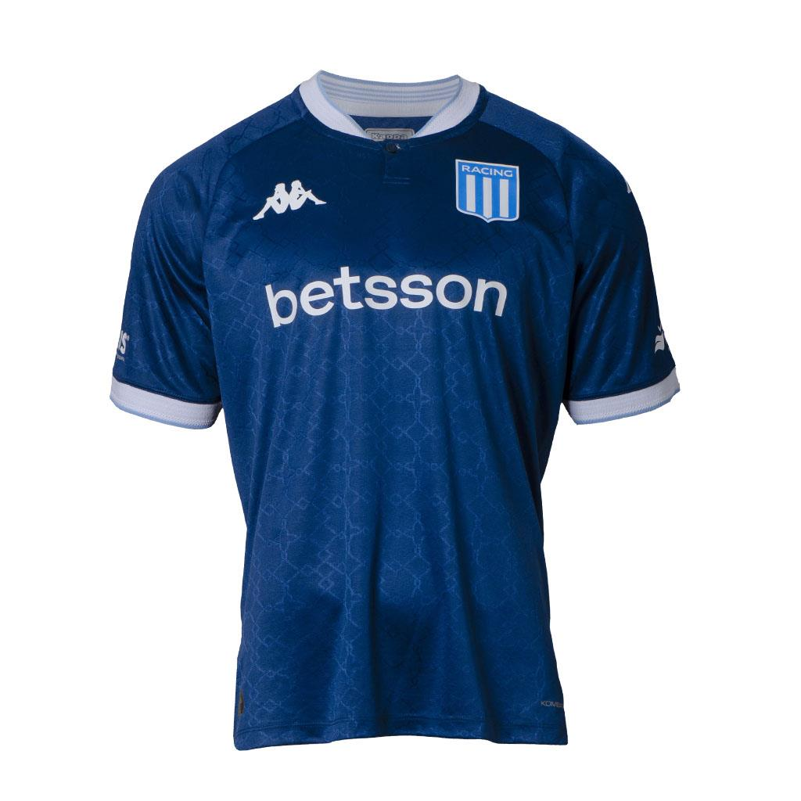
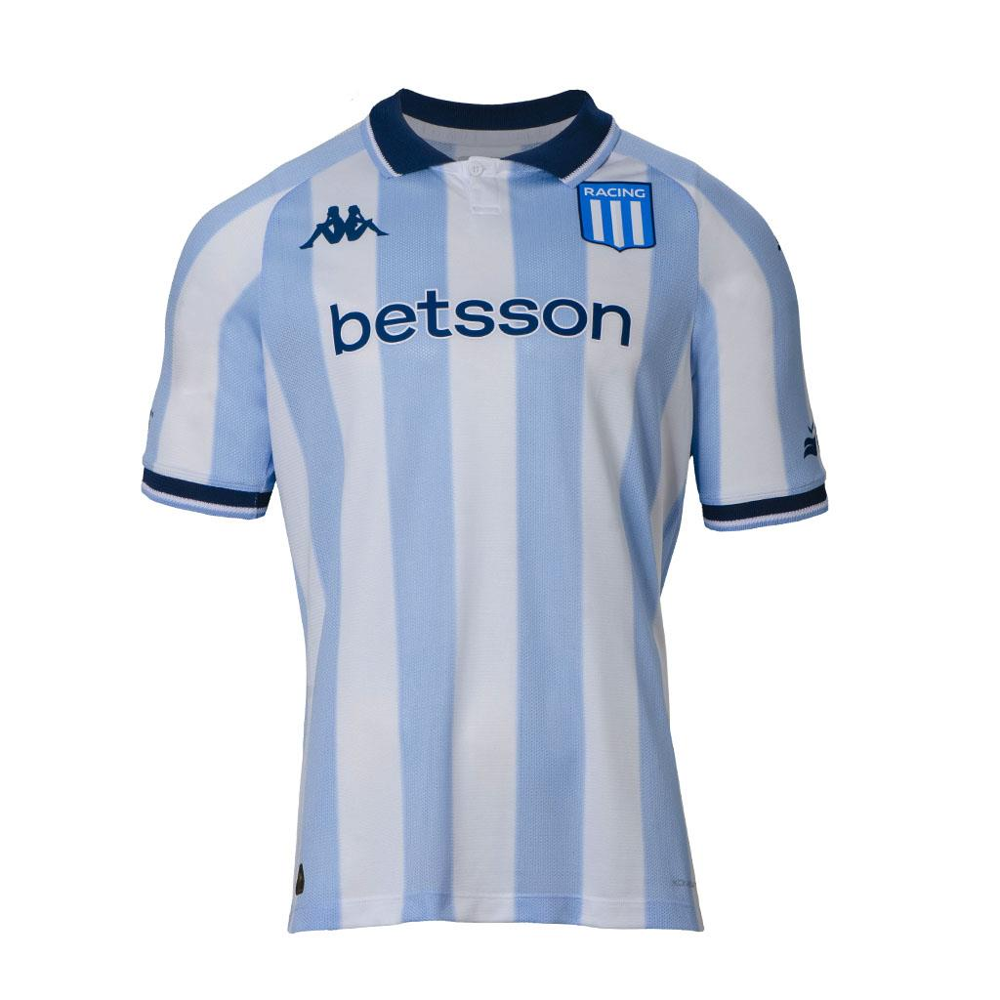
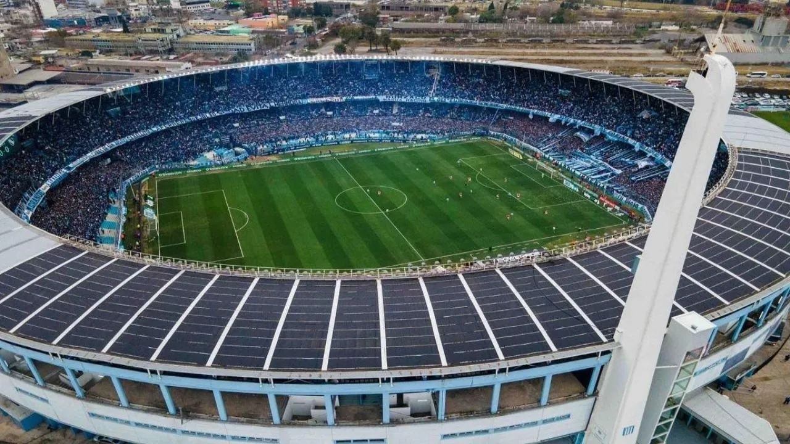

Fundación: 1903, Avellaneda.
Apodo: La Academia.
Palmarés destacado:
9 Ligas argentinas
1 Copa Libertadores (1967)
1 Copa Intercontinental
Historia:
Racing fue el primer gran club argentino en tener una gran cantidad de títulos consecutivos (heptacampeón 1913-1919).
En los años 60 fue campeón del mundo, pero luego pasó por crisis institucionales y hasta descendió. Su resurgimiento comenzó en los 2000, con títulos en 2001, 2014 y 2019.
PRÓXIMOS PARTIDOS
| Día |
L/V |
vs Equipo |
Hora |
| 02/07 | L | San Martín | 18:45 |
| 13/07 | L | Barracas | 14:00 |
| 20/07 | V | Belgrano | 14:00 |
| 27/07 | L | Estudiantes | 14:00 |
| 10/08 | V | Boca Jrs. | 14:00 |
PLANTEL
| Jugador |
Edad |
Nacimiento |
Altura |
| Gustavo Costas (Entrenador) |
62 |
28/02/1963 |
|
| ARQUEROS |
| Gabriel Arias | 37 | 13/09/1987 | 1.87 |
| Facundo Cambeses | 28 | 09/04/1997 | 1.85 |
| DEFENSORES |
| Agustín García | 33 | 26/03/1992 | 1.78 |
| Marco Di Cesare | 23 | 30/01/2002 | 1.86 |
| Gastón Martirena | 25 | 05/01/2000 | 1.73 |
| Germán Conti | 31 | 03/06/1994 | 1.93 |
| Nazareno Colombo | 26 | 20/03/1999 | 1.84 |
| Gabriel Rojas | 28 | 22/06/1997 | 1.69 |
| Facundo Mura | 26 | 24/03/1999 | 1.72 |
| Santiago Quirós | 22 | 04/03/2003 | 1.79 |
| MEDIOCAMPISTAS |
| Alan Forneris | 20 | 28/01/2005 | 1.88 |
| Juan Nardoni | 22 | 14/07/2002 | 1.69 |
| Matías Zaracho | 27 | 10/03/1998 | 1.71 |
| Santiago Sosa | 26 | 03/05/1999 | 1.79 |
| Martín Barrios | 26 | 24/01/1999 | 1.77 |
| Ignacio Rodríguez | 23 | 22/02/2002 | 1.75 |
| Adrián Fernández | 24 | 20/05/2001 | 1.83 |
| Richard Sánchez | 29 | 29/03/1996 | 1.70 |
| Agustín Almendra | 25 | 11/02/2000 | 1.82 |
| Bruno Zuculini | 32 | 02/04/1993 | 1.82 |
| David Gonzalez | 21 | 08/07/2003 | 1.67 |
| Sergio Sánchez | 23 | 17/08/2001 | 1.70 |
| DELANTEROS |
| Emiliano Saliadarre | 23 | 05/05/2002 | 1.78 |
| Duván Vergara | 28 | 09/09/1996 | 1.85 |
| Maximiliano Salas | 27 | 01/12/1997 | 1.72 |
| Adrián Martínez | 32 | 07/07/1992 | 1.81 |
| Luciano Vietto | 31 | 05/12/1993 | 1.75 |
| Santiago Solari | 27 | 19/01/1998 | 1.78 |
| Ramiro Degregorio | 22 | 08/02/2003 | 1.69 |
| Adrián Balboa | 31 | 19/01/1994 | 1.85 |


